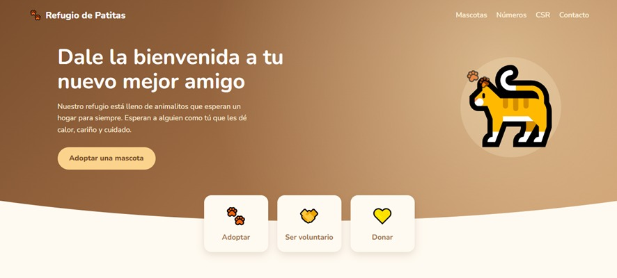
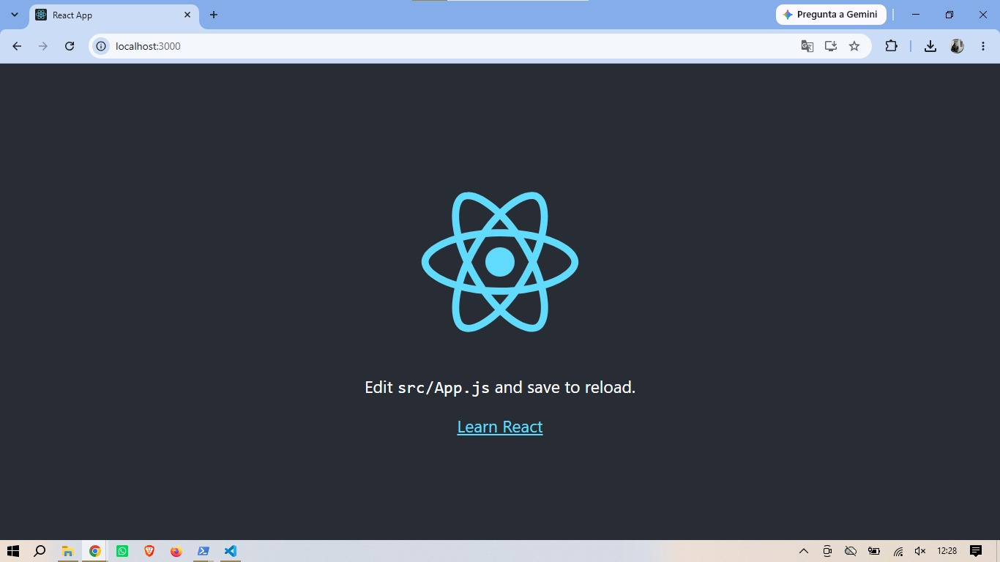
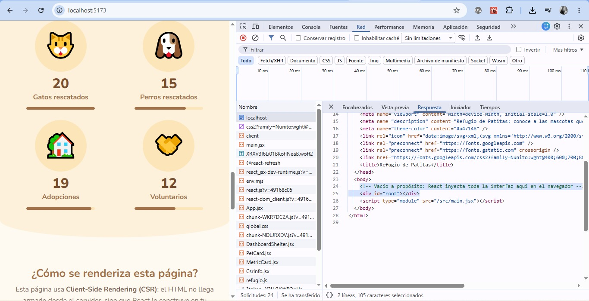

Bitácora de Aprendizaje ·
Temas tratados
Configuración y comparativa de tres entornos de desarrollo diferentes en React (Create React App, Vite y Next.js), arquitectura de componentes funcionales, flujo de datos unidireccional con props y composición mediante children, estrategias de estilado (CSS Modules) e inspección del comportamiento Client-Side Rendering (CSR).
¿Qué aprendí?
- Creación de Entornos Múltiples: despliegue y verificación de tres formas de inicializar React (Create React App con Webpack, Vite con HMR ultrarrápido y Next.js para producción).
- Arquitectura de Componentes: estructuración de App.jsx como orquestador limpio, delegando responsabilidades a componentes hijos.
- Flujo de Datos (Props y Children): transmisión de datos inmutables de padre a hijo mediante props y composición flexible anidando elementos JSX con props.children.
- Estrategias de Estilado: aplicación de CSS Modules (*.module.css) para aislar estilos de componentes y evitar colisiones globales en la cascada.
- Validación de CSR y Ciclo de Render: análisis del HTML inicial con un <div id="root"></div> vacío y el proceso de hidratación del DOM en el navegador con React DevTools.
Laboratorio / Práctica
- Práctica Individual: creación de la SPA "Refugio de Patitas" integrando componentes contenedores (DashboardShelter), tarjetas reutilizables (PetCard) mapeadas con .map(), y estilado con CSS Modules.
- Práctica de Validación CSR: auditoría de red y componentes mediante DevTools para verificar la inyección dinámica del bundle de JavaScript.
Herramientas y Validaciones
- Create React App, Vite y Next.js.
- CSS Modules para estilado aislado.
- React Developer Tools.
- VS Code y GitHub.
Evidencias


